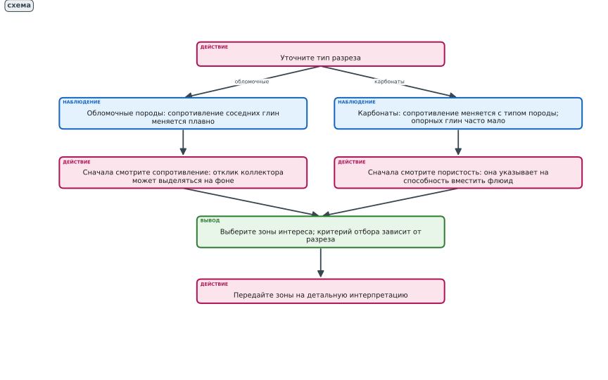
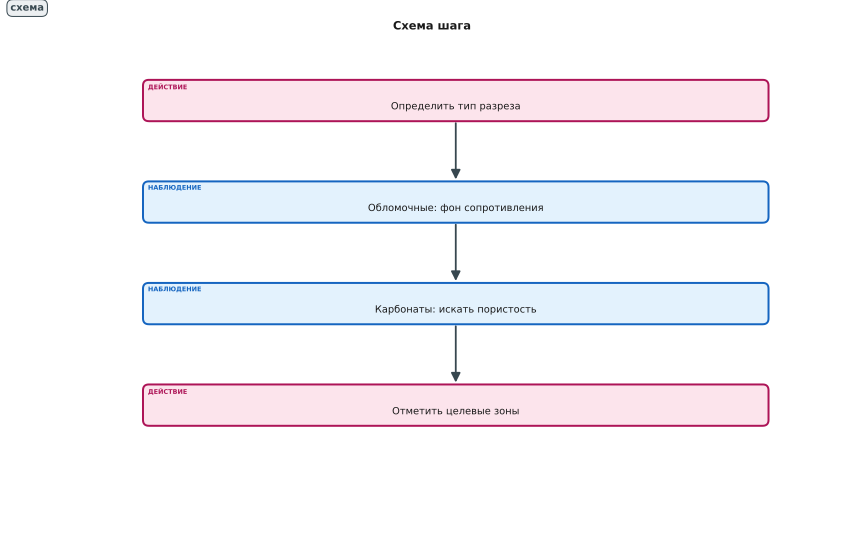

Для первичного отбора кривую выбирают по типу породы.
В обломочных породах, сложенных из частиц, начинают с сопротивления. В карбонатах, богатых карбонатными минералами, начинают с пористости.
Пороговая идея. Отправная кривая зависит от типа разреза. модель
Интерактив: как это происходит

1 / 3
Появляется вопрос выбора: сначала уточняют тип разреза, а не объявляют универсальную первую кривую.
Допущения: Показана условная блок-схема на основе текста узла; глубины, численные пороги и реальные замеры не заданы..
Как это работает
Механизм
У схемы две ветви. В обломочных породах коллектор часто окружён глинами с медленно меняющимся сопротивлением. Смена флюида может дать заметное отклонение на этом фоне. стр. 126
«Note that it has two paths, one for clastics and one for carbonates.»
«In the clastic case, the resistivity log is the primary reconnaissance measurement because clastics tend to consist of reservoirs surrounded by shales of slowly varying resistivity.»
«The changes in resistivity due to changes in fluid content of the reservoirs tend to stand out against this relatively constant background.»

Схема связывает исходный признак с проверкой и выводом.
Класс B · схема · нарисовано кодом · стр. 126
В карбонатах сопротивление сильно меняется при смене самих пород. Подходящих глинистых опор часто мало. Пористость указывает, где порода способна вместить жидкость или газ. Она не показывает, какой именно флюид находится в породе. стр. 126
«On the carbonate path, on the other hand, formation resistivities tend to vary widely with changing rock types, and commonly there are few shales against which to measure changes.»
«In this case, the porosity log is the primary reconnaissance measurement. By first finding the porous zones, those with the capacity to hold fluids (of any type) can be identified.»
Практика
Выберите первую кривую по типу разреза. Отметьте интересующие зоны и переходите к детальной интерпретации. Схема автора указывает, где искать пояснения к дальнейшим операциям. стр. 126
«Figure 7.2 shows the details of a log interpretation, once zones of interest are identified, with references to the chapters in which the information is discussed.»
По шагам
Что сделать
Определите тип разреза. стр. 126
Выберите стартовую кривую: сопротивление или пористость. стр. 126
Отметьте интервалы и переходите к детальной оценке. стр. 126
Решение на данных
Выберите стартовую кривую
Признаки
Тип породы
Устойчивость фона сопротивления
↓
Правило
В обломочных породах сначала проверяют сопротивление, в карбонатах — пористость. стр. 126
↓
Вывод
Пористость помогает найти вмещающую флюид зону, но не назвать флюид.
Потренируйтесь
Дано: В карбонатах сопротивление меняется вместе с типом породы. (модель)
Пористость отбирает интервалы, где флюиду есть место.
Что это значит для данных по книге
Тип породы и кривые сопротивления и пористости → Целевые интервалы для детального анализа.
Вход
Тип породы и кривые сопротивления и пористости
Выход
Целевые интервалы для детального анализа
Где ломается
Сопротивление карбонатов может изменяться без смены флюида
Где здесь ручной труд специалиста
Входные данные
Тип породы и кривые сопротивления и пористости
Ручные шаги
В обломочных породах начните с сопротивления; в карбонатах — с пористости. После отбора зон перейдите к детальной интерпретации.
Точки суждения
Где уверенно указан тип разреза и есть ли опорный фон
Время
Зависит от полноты входных данных и числа проверок; глава не даёт оценки времени.
Типичные ошибки
Одинаково классифицировать карбонаты и обломочные породы
Аналогия модель
Выбрать правило отбора отдельно для разных доменов данных.
Где аналогия перестаёт работать: Признаки отражают физику породы и флюида; это не независимые признаки из таблицы.
Рисунки книги к этому шагу по книге
Рис. 7.1. Figure 7.1 is a flowchart for one such scanning technique. Note that it has two paths, one for clastics and one for carbonates. In the clastic case, the resistivity log is the primary reconnaissance measurement because clastics tend to consist of reservoirs surrounded by shales of slowly varying resistivity. The changes in resistivity due to changes in fluid content of the reservoirs tend to stand out against this relatively constant background. On the carbonate path, on the other hand, formation resistivities tend to vary widely with changing rock types, and commonly there are few shales against which to measure changes. In this case, the porosity log is the primary reconnaissance measurement. By first finding the porous zones, those with the capacity to hold fluids (of any type) can be identified. стр. 126(не перерисован — смотрите в книге)
Рис. 7.2. Figure 7.2 shows the details of a log interpretation, once zones of interest are identified, with references to the chapters in which the information is discussed. стр. 126(не перерисован — смотрите в книге)
Новые понятия
Коллектор (reservoir)
Интервал породы, способный вмещать флюиды. модель
Пористость (porosity)
Доля объёма породы, занятая порами. модель
Каротаж (well logging)
Измерения свойств пород и флюидов вдоль ствола скважины. модель
Литология (lithology)
Состав и тип породы. модель
Обломочные породы (clastics)
Породы из обломков и частиц более ранних пород. модель
Карбонатные породы (carbonates)
Породы, сложенные преимущественно карбонатными минералами. модель
Все утверждения шага с дословной цитатой автора и страницей книги (по PDF).
Схема предусматривает отдельные маршруты для обломочных и карбонатных пород. наблюдение
«Note that it has two paths, one for clastics and one for carbonates.»
В обломочном разрезе сначала смотрят сопротивление, поскольку коллекторы часто окружены глинами с медленно меняющимся сопротивлением. наблюдение
«In the clastic case, the resistivity log is the primary reconnaissance measurement because clastics tend to consist of reservoirs surrounded by shales of slowly varying resistivity.»
Изменение состава флюида выделяется на относительно постоянном фоне сопротивления. наблюдение
«The changes in resistivity due to changes in fluid content of the reservoirs tend to stand out against this relatively constant background.»
В карбонатах типы пород дают широкий разброс сопротивлений; глинистых интервалов для опоры часто мало. наблюдение
«On the carbonate path, on the other hand, formation resistivities tend to vary widely with changing rock types, and commonly there are few shales against which to measure changes.»
В карбонатах первая кривая — пористость: она выделяет зоны, способные вместить флюид любого типа. наблюдение
«In this case, the porosity log is the primary reconnaissance measurement. By first finding the porous zones, those with the capacity to hold fluids (of any type) can be identified.»
После выбора целевых зон схема направляет к детальной интерпретации и нужным главам. наблюдение
«Figure 7.2 shows the details of a log interpretation, once zones of interest are identified, with references to the chapters in which the information is discussed.»
Исходный текст урока
Стр. 126 · SCANNING THE LOGS: A RECONNAISSANCE TECHNIQUE
Figure 7.1 is a flowchart for one such scanning technique. Note that it has two paths, one for clastics and one for carbonates. In the clastic case, the resistivity log is the primary reconnaissance measurement because clastics tend to consist of reservoirs surrounded by shales of slowly varying resistivity. The changes in resistivity due to changes in fluid content of the reservoirs tend to stand out against this relatively constant background. On the carbonate path, on the other hand, formation resistivities tend to vary widely with changing rock types, and commonly there are few shales against which to measure changes. In this case, the porosity log is the primary reconnaissance measurement. By first finding the porous zones, those with the capacity to hold fluids (of any type) can be identified.
Стр. 126 · SCANNING THE LOGS: A RECONNAISSANCE TECHNIQUE
Figure 7.2 shows the details of a log interpretation, once zones of interest are identified, with references to the chapters in which the information is discussed.